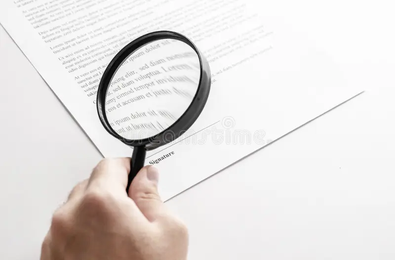

Cos’è l’inchiesta?
L’inchiesta è una forma di indagine che, attraverso la raccolta di dati, testimonianze e osservazioni dirette, mira a portare alla luce verità nascoste, spesso legate a ingiustizie sociali o storiche. Non si tratta solo di uno strumento giornalistico, ma anche letterario, utilizzato da scrittori per denunciare realtà scomode e stimolare una riflessione collettiva.
